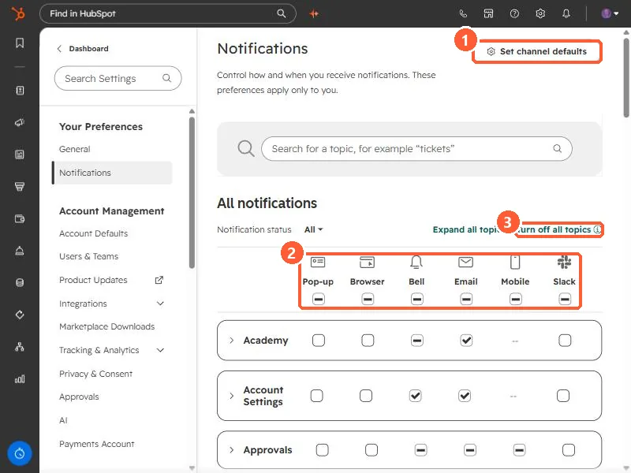

Short answer
HubSpot's KB: each notification type can be set per channel, for example desktop pop-ups for new assigned conversations. Users get no more than 1,000 email notifications a day per address; extras are dropped. Default system notification templates can't be customized, and unsubscribing from one turns that type off.
1. Notification settings
Notifications in my demo portal.


2. Customer emails
To email the customer, use a ticket workflow.